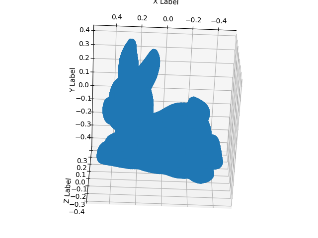
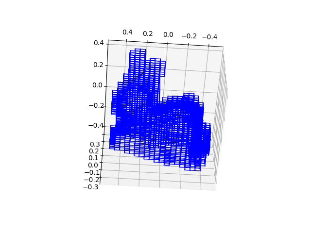

Designing structures with phase-changing and shape memory polymers
Desiging shape adaptive structures soft and flexible materials
Analysing dynamic behavior of soft materials and metals
Analysing inelastic behvaior of materials
Simulating High Cycle and Low Cycle fatigue damages
Desiging resilient structures using smart materials
Desiging structures made of soft materials using Neural Networks
Voxelization of CAD geometries for structural design using Topology Optimization
Voxelization of the stanford bunny
The stanford bunny point cloud (the point cloud information can be extracted from .STL file as well)

The volxelized version of stanford bunny
